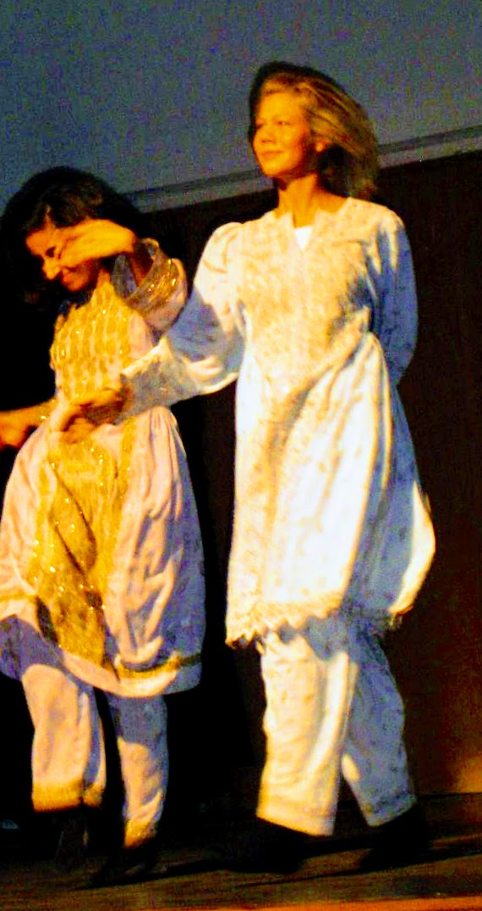
2005 Lambertseter videregående —
Konferansieren på Internasjonal dag var noe for seg selv.
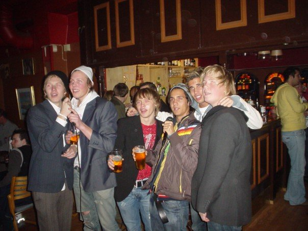
2006 Entertainers —
Det var Olav også. Heldigvis trodde Bente han var lillebroren til Axel Hennie.
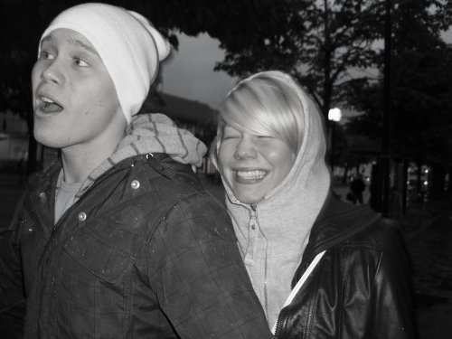
2006 NTNU —
Forholdet ble fort satt på prøve da Olav flyttet til Trondheim.
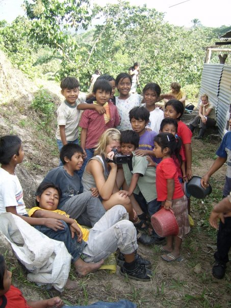
2007 Guatemala —
Avstandsforhold er topp. Bente flytter ut i jungelen.
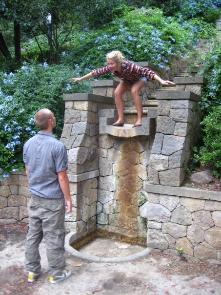
2008/2009 Barcelona og Buenos Aires —
Felles utveksling blir lysglimt i studiene. Ikke på karakterene.
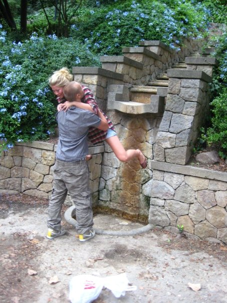
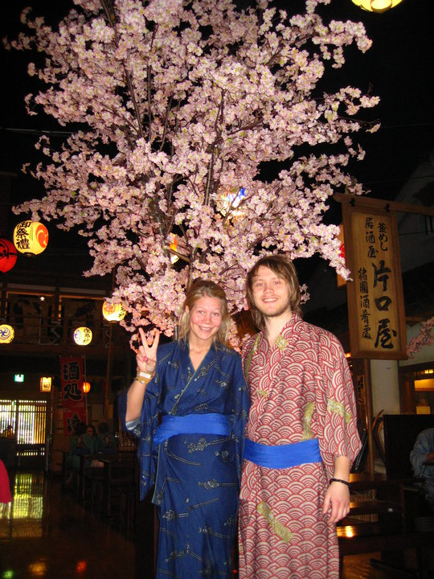
2010 Japan —
Flott bilde fra Kyoto.
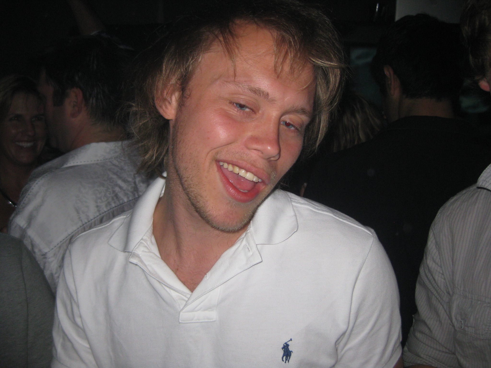
2010 Gründerskolen —
Det holder ikke med Poloskjorte for å bli gründer.
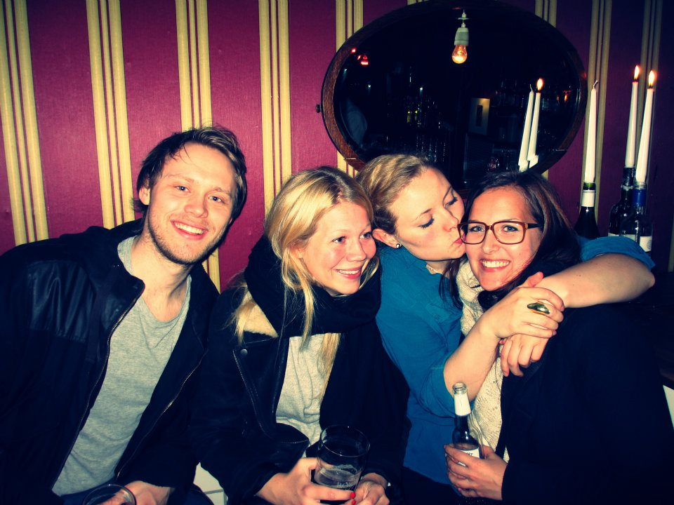
2011 København —
Krona er sterk. Bente drar til Køben. Olav kommer etter.
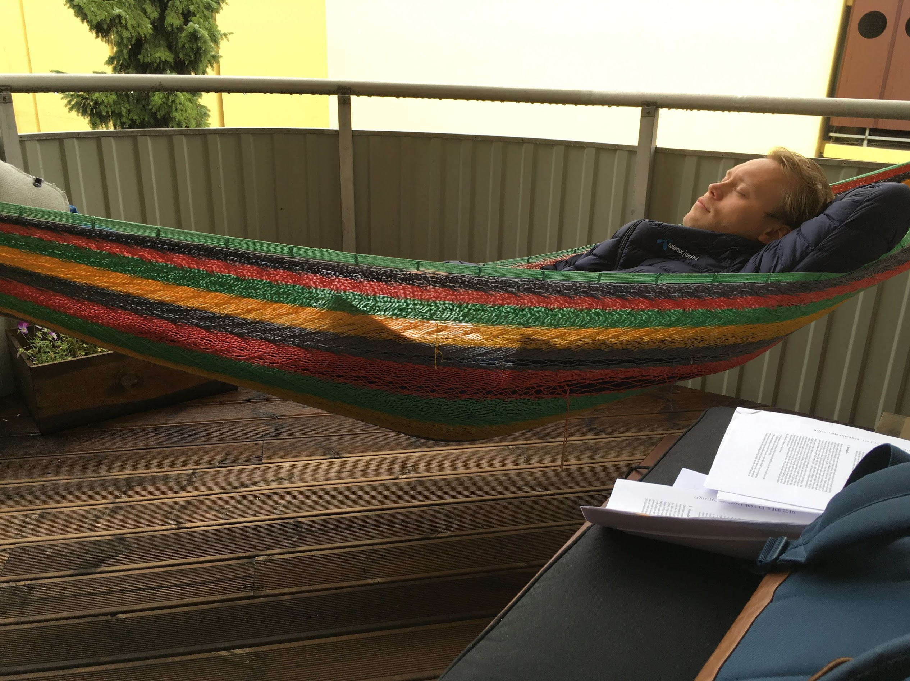
2015 Valdresgata —
Omsider får vi felles adresse på løkka. Hjemmebrygg, sous vide og retromøbler.
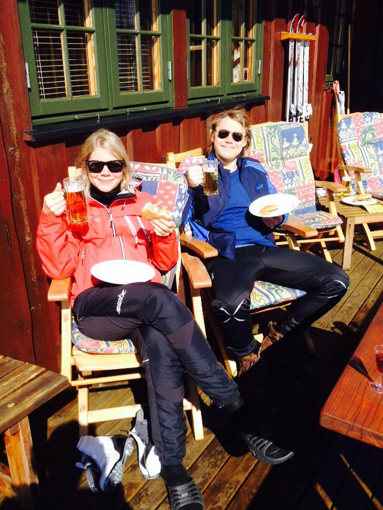
2016 Hafjell —
Nå ser vi frem til hvetebrødsdager